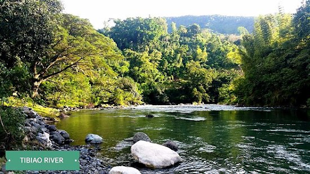
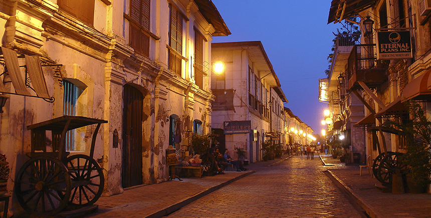
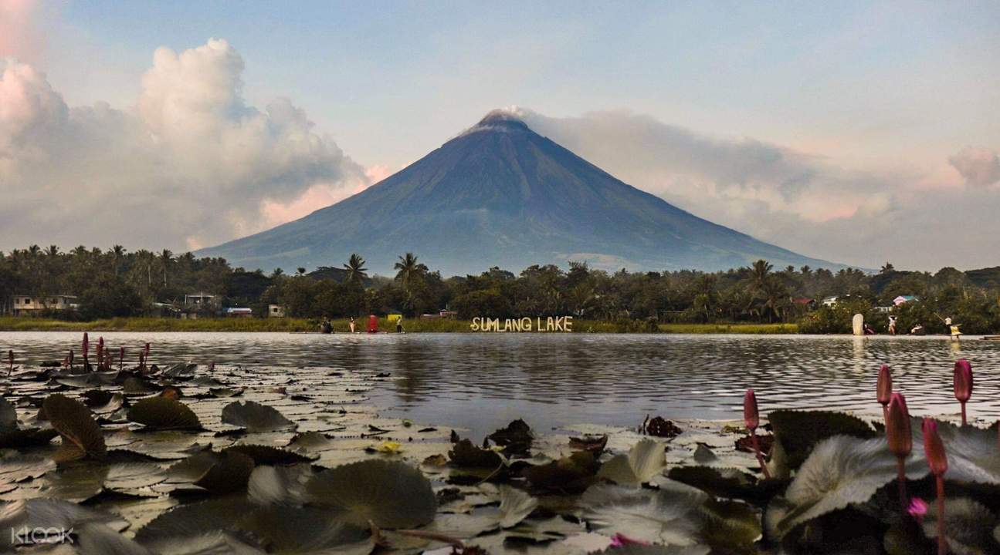

Tibiao is dubbed the Eco-Adventure Capital of Panay Island. It offers various adventure activities
such as trekking to Bugtong Bato Fall, kayaking and river tubing in Tibiao River, and cultural
immersion tour to Antique Rice Terraces.The Antique Rice Terraces is a recently rediscovered heritage
attraction in the town of San Remigios. The rice terraces covers 600 hectares and it is preserved by
the Iraynon Bukidnon, an indigenous group in Barangay General Fullon.
How to get there

Philippine Airlines and Cebu Pacific fly daily to Iloilo City from Manila. From Iloilo airport,
hop on a van to the Molo terminal. Ride a bus or van plying the Iloilo-Caticlan or Iloilo-Culasi
or Iloilo-Libertad route. Get off in Tibiao, Antique. Travel time is approximately 2-3 hours.
Other places to visit
Calle Crisologo, Vigan

The town has successfully managed to preserve the historic district where you can still find calesas
(horse-drawn carriages). Sample the famous and delicious Ilocos empanada, and walk along cobbled streets
lined up with souvenir shops selling pottery and Abel Iloko weaves, among the many things to see and do when
in Vigan.
Mayon Volcano, Legazpi

Its sheer beauty (the name Mayon comes from the Bicolano word ‘magayon,’ which means beautiful) hides a violent core, with past eruptions that flattened several towns.
It is already a wonderful experience seeing the volcano from afar. But if you are an adrenaline junkie, you can soak up all its beauty while gliding through a zipline
in Lignon Hill. Visit the Cagsawa Ruins for another unique and historic viewing point of the Mayon Volcano. Back